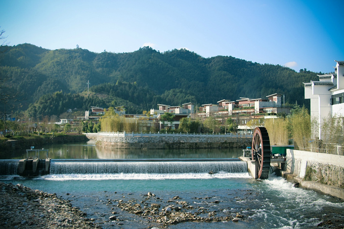
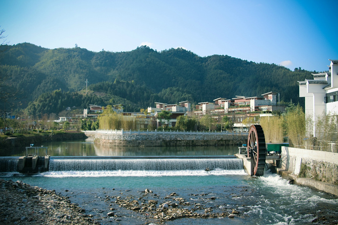
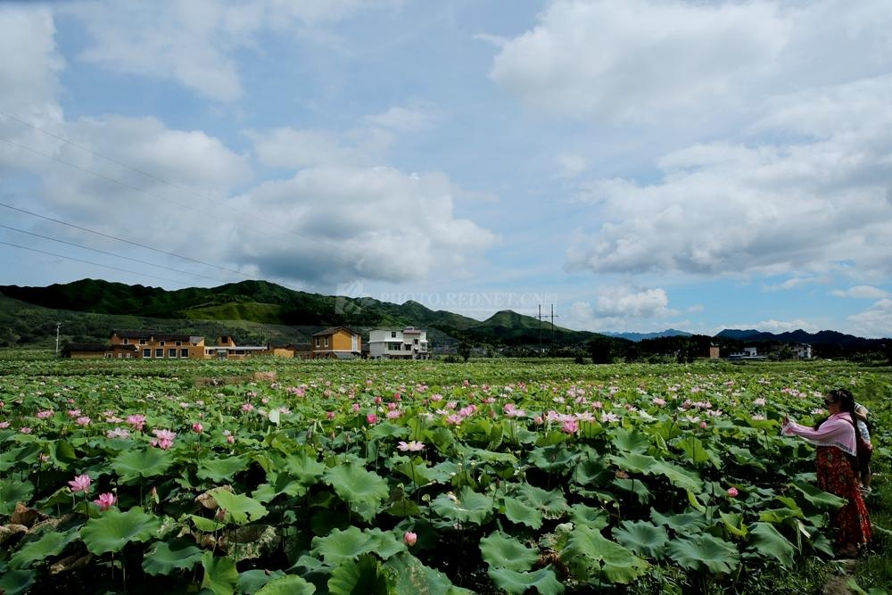
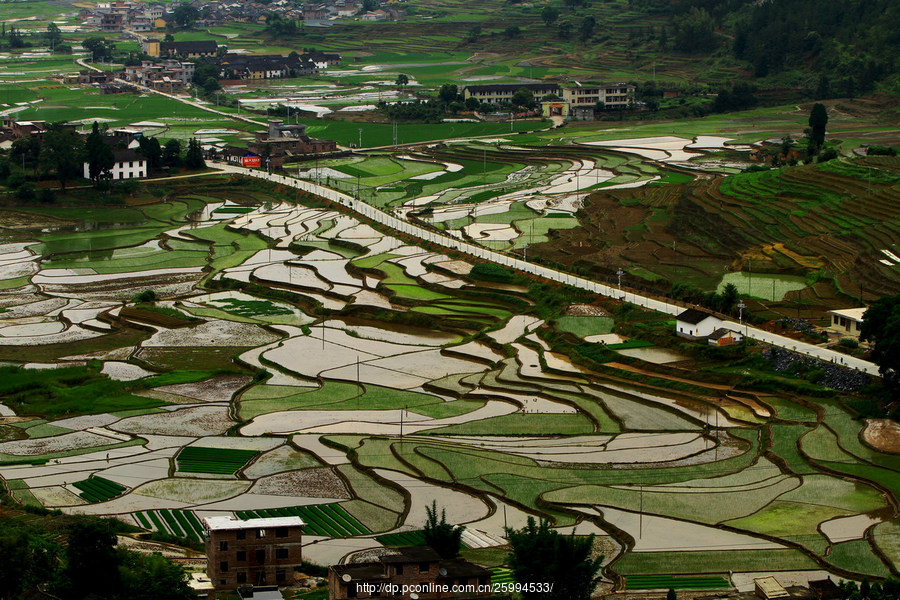
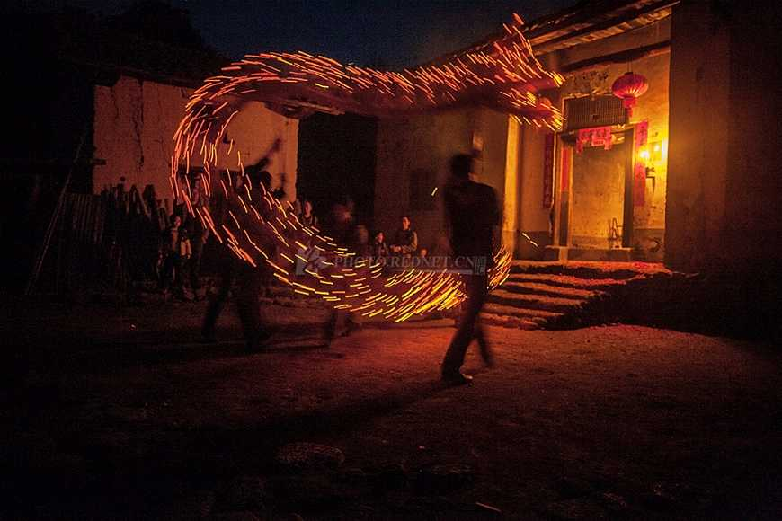
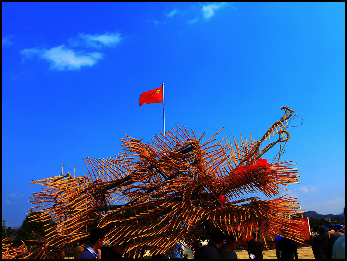
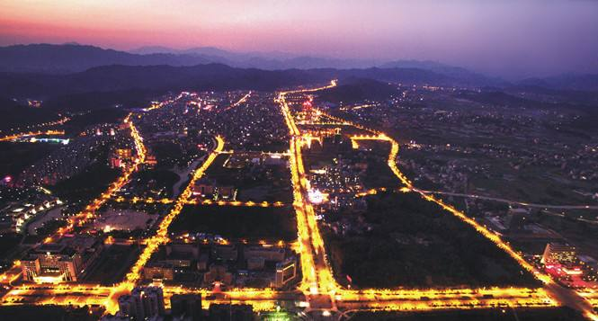
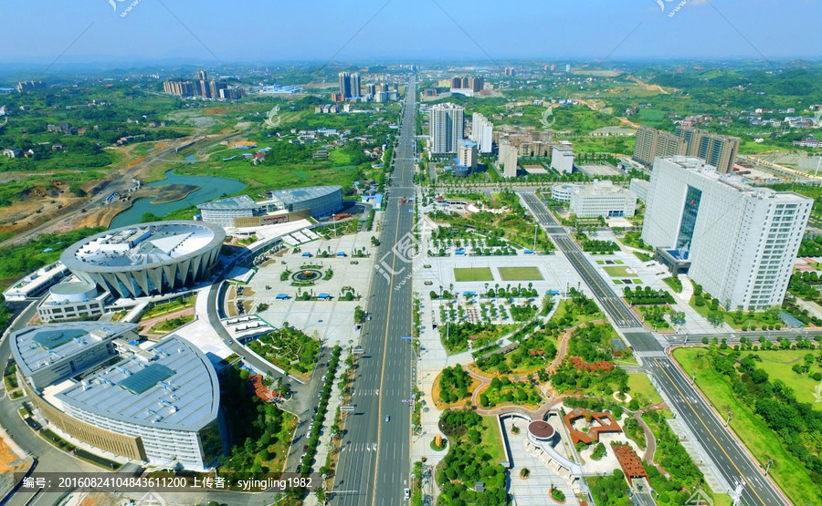

地理位置
汝城县，隶属于湖南省郴州市，位于湖南省东南部，与广东、江西两省接壤，有“毗连三省，水注三江（湘江、珠江、赣江）”之美称。汝城森林覆盖率73.69%，保有原始次生林13万亩，是湖南省重点林区县。境内的热水温泉是华南地区“流量最大、水温最高、水质最好、面积最广”的天然热泉，建有国家AAAA级旅游景区—福泉山庄；九龙江国家森林公园被誉为“南岭植物王国” [1-2] 。全县土地面积2400平方公里，辖14个乡镇，人口40万，其中少数民族乡镇3个，少数民族人口6.2万，占郴州市少数民族人口的75%。
文化底蕴
汝城自东晋穆帝升平二年（公元358年）置县，是省级历史文化名城，“汝城香火龙”入选国家级非物质文化遗产。理学家周敦颐在此著就《爱莲说》等名篇。毛泽东、朱德等老一辈无产阶级革命家曾在这里留下光辉足迹，汝城养育了朱良才、李涛两位开国上将及宋裕和等革命家，被省政府认定为革命老游击区和第一批井冈山老区县
这里是个历史悠久的小镇
 

也是个风景优美的地方


还有着独特的文化


还有着现代化的风景

